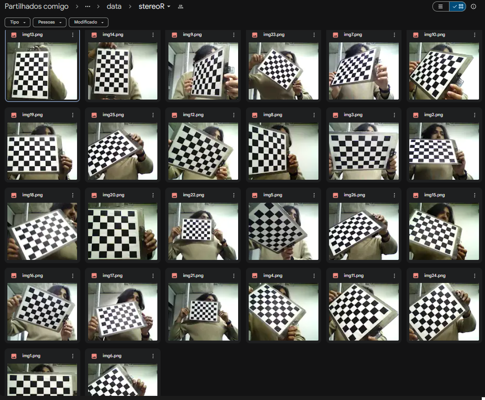

Entender os conceitos de Estereoscopia e Geometria Epipolas. Realizar um experimento de Imagem 3D com calibração de câmeras estéreo
i. Seguiremos as instruçoes indicadas na seção “Steps To Create The Stereo
Camera Setup” da referencia [1], utilizando duas webcams iguais.
ii. Apoie ambas webcam paralelamente sobre uma superfície plana e firme,
de forma que os eixos opticos fiquem aproximadamente 5 cm entre si.
iii. As câmeras não deverão se mover uma em relação à outra após o
procedimento de calibração. Portanto, fixe-as fortemente.
iv. No relatório descreva os procedimentos com o máximo de detalhes, de
forma a permitir a reprodução do experimento.
Para que seja realizada a calibração das câmeras, foi modificado o programa capture_images.py, utilizando os índices das câmeras, no caso 0 para a câmera esquerda e 2 para câmera direita em todos os pontos onde foi necessário. Também foi preciso mudar a quantidade de pontos que devem ser capturados dos tabuleiros para 6x8. Depois disso, foram tiradas 26 fotos de cada lado para a calibração da câmera. Com as imagens capturadas, o programa calibrate.py foi adequado para utilizar as fotos capturadas em cada câmera para poder realizar a calibração das mesmas.
Para capturar os vídeos simultaneamente, foi modificado o programa do primeiro laboratório para captura de vídeo. Para ambas as câmera capturarem as imagens juntas, o que foi feito foi duplicar as linhas de código adicionando índices indicadores do lado de cada câmera.
Fotos tiradas para calibração do canal direito e do canal esquerdo
Ao rodar os programas com as fotos tiradas, foram retornadas os parametros, como é um arquivo relativamente grande, abaixo está os links onde os arquivos podem ser encontrados .
Parametros cppLink para os videos criados:
Video com camera esquerdaVideo com camera esquerda:
Video com camera direita:
Esse laboratório serviu para entendermos o processo de aprendizado com Python e algumas funções. A maioria das funções já estavam escritas porem estavam com algum erro e/ou com parametros errados. Com algumas alterações desses codigos os programas rodaram conforme solicitado.
O grupo conseguiu observar algumas funções que serão utilizadas no futuro para Visão Computacional, tais como captura de tela, captura de vídeo e processamento dessas imagens e videos. Com essas ferramentas, podemos aplicar diversas ferramentas de processamento de dados, machine learning para diferentes aplicações.
A percepção do vídeo gravado foi diferente para cada integrante do grupo, como era de se esperar, já que a distância entre as câmeras foi determinada a partir da distância dos olhos de um dos integrantes especificamente. Além disso, na imagem ao vivo, antes do tratamento, a sensação de profundidade não era a mesma de depois da gravação ser executada usando o programa movie3d.py adaptado para executar o vídeo do grupo.